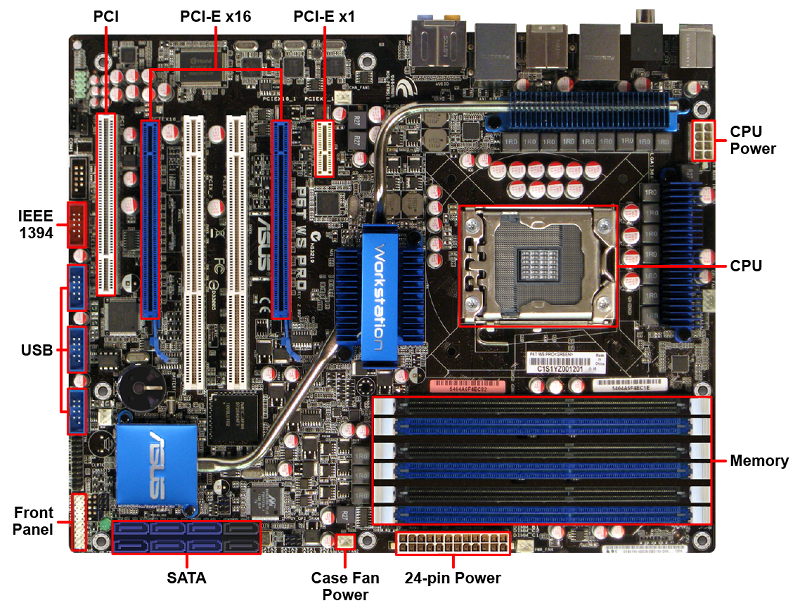

Cooling
Motherboard Specifications & Components
Key Specifications:
- CPU Socket Type: Determines CPU compatibility.
- Memory Compatibility: Includes type, number of slots, and maximum supported memory.
- Expansion Slots: Defines the number and type of slots (PCI, PCIe, etc.).
- Onboard Devices: Integrated features like video, audio, or networking.
Typical Components & Troubleshooting
CPU Socket
- Function: Houses the CPU; must match the processor type and pin configuration.
- Troubleshooting: Check motherboard model and manufacturer website for compatibility before upgrading.
Memory Slots
- Function: Allows adding RAM modules; must match memory type and speed.
- Troubleshooting: Verify motherboard documentation for supported RAM specs.
Expansion Slots
- Function: Enables adding components like graphics, network, and sound cards.
- Types: PCI, PCI-X, PCIe, AGP
- Troubleshooting: Ensure the slot type matches the expansion card being installed.
Integrated Components
- Size: 12" × 13"
- Function: Built-in network, audio, video, and USB/FireWire ports.
- Troubleshooting: If performance is inadequate, disable onboard features in BIOS/UEFI and use dedicated expansion cards.
I/O Connectors
- Back-panel ports for external peripherals. Common ports include:
- PS/2 (keyboard/mouse)
- USB, Ethernet, audio jacks
- Serial (COM), parallel ports
- Troubleshooting: If ports fail, check BIOS settings or update drivers.
Internal Connectors
- Function: Connect case components like fans, LEDs, and front panel ports.
- Troubleshooting: Ensure proper placement of power and data connectors per motherboard manual.
Storage Connectors
- eSATA: Provides external SATA connectivity via expansion card.
- M.2: Faster alternative to SATA SSDs; verify motherboard compatibility before installation.
- Troubleshooting: Ensure M.2 slot supports desired storage type (NVMe vs. SATA).
Firmware (BIOS/UEFI)
- Function: Manages hardware initialization and system settings.
- Troubleshooting: Update firmware if experiencing hardware compatibility issues.
CMOS Battery
- Function: Maintains system clock and BIOS settings.
- Troubleshooting: Replace if system loses date/time settings when powered off.
Chipset
- Function: Manages communication between CPU, memory, and peripherals.
- Types:Intel: Platform Controller Hub (PCH) and AMD: Fusion Controller Hub (FCH)
- Troubleshooting: Update chipset drivers for improved performance and compatibility.
Documentation & Support
- Function: Provides specifications, diagrams, and upgrade guidance.
- Troubleshooting: Always refer to the support manual or manufacturer website when upgrading components.
Diagram
A typical motherboard includes the common connectors shown in the following diagram.
